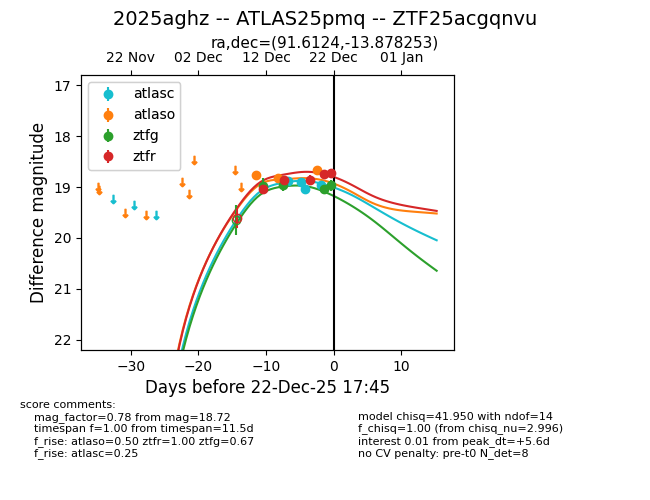
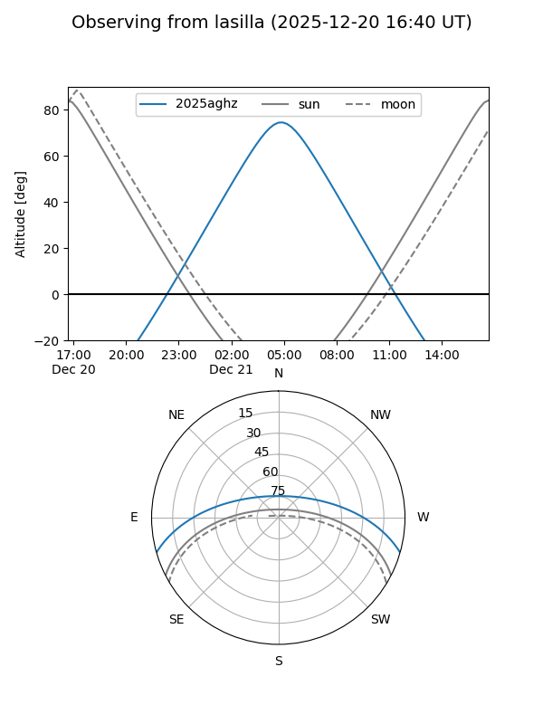
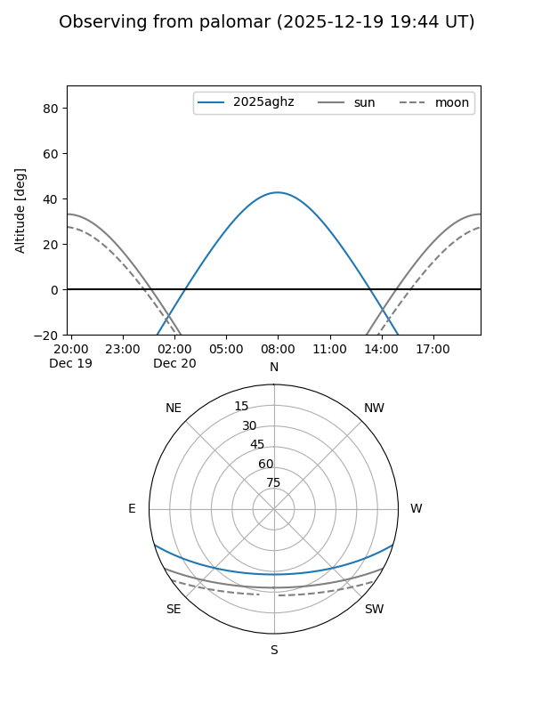

2025aghz
Target 2025aghz at 2025-12-22 16:21
Aliases and brokers:
FINK: fink-portal.org/ZTF25acgqnvu
Lasair: lasair-ztf.lsst.ac.uk/objects/ZTF25acgqnvu
ALeRCE: alerce.online/object/ZTF25acgqnvu
TNS: wis-tns.org/object/2025aghz
YSE: ziggy.ucolick.org/yse/transient_detail/2025aghz
alt names
ZTF25acgqnvu (ztf,fink_ztf)
2025aghz (tns,yse)
ATLAS25pmq (atlas)
Coordinates:
equatorial (ra, dec) = 91.6124,-13.87825
equatorial (HMS+DMS) = 06:06:26.97,-13:52:41.71
galactic (l, b) = (220.5371,-16.13424)
Flags:
Photometry:
last atlasc=18.97, atlaso=18.66, ztfg=18.96, ztfr=18.75
5 atlasc, 3 atlaso, 4 ztfg, 4 ztfr detections
Lightcurve

Visibility


Additional plots